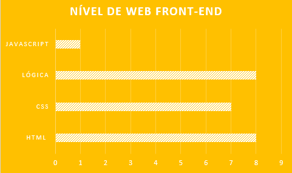

Portfólio e Currículo
Nicolly Martins Filgueira
Currículo
Portfólio
Contatos
Informações Pessoais
Rua Tietê 761
Vila Seabra
São Paulo-SP
(11) 96602-1487
nicollymarty011@gmail.com
Brasileira e Solteira

Olá Mundo: O início de Tudo
21 Brazões de futebol
A História do Linux
Duelo de Titãs